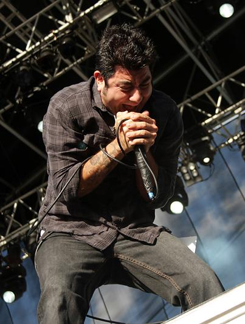

Voz · guitarra
Chino Moreno
Vocalista y uno de los principales letristas de Deftones. Su voz recorre susurros íntimos, melodías delicadas y gritos intensos, a veces dentro de una misma canción; ese contraste se convirtió en uno de los rasgos más reconocibles del grupo.
También participa en guitarras y arreglos en distintas grabaciones. Fuera de la banda desarrolló proyectos como Team Sleep y ††† (Crosses), donde explora otros matices de su interés por las texturas y la música atmosférica.